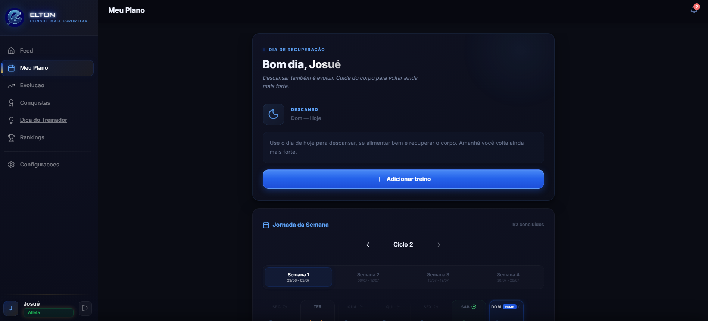
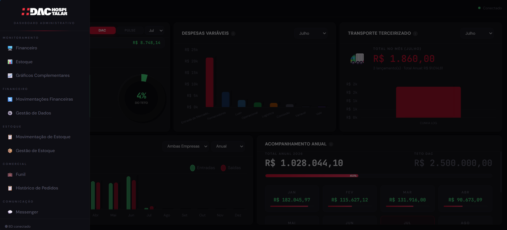
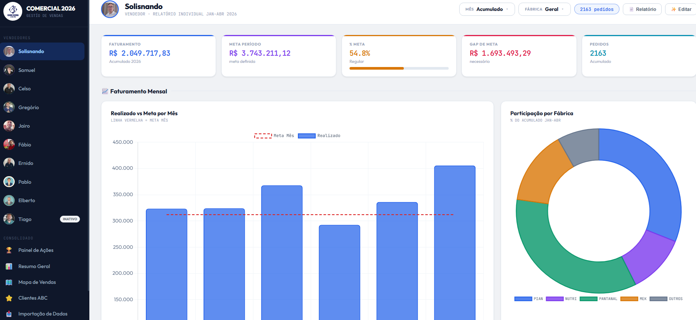
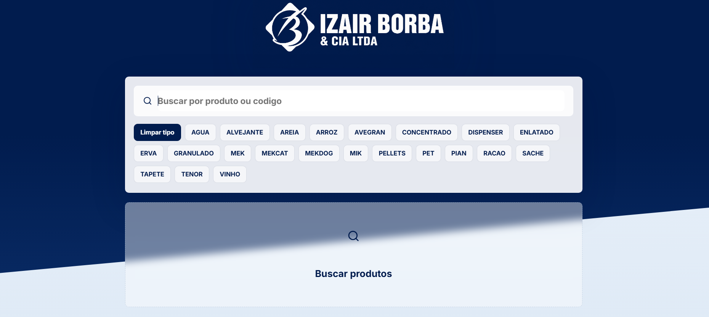

Acessoria Esportiva Elton Almeida

Sistema desenvolvido para a Elton Almeida Assessoria Esportiva, focado em corredores que buscam acompanhamento profissional, treinos personalizados e informações sobre provas e eventos. O objetivo é oferecer uma experiência moderna, prática e responsiva para atletas de todos os níveis.
Ver TecnologiasDashboard administrativo para DAC Hospitalar

Dashboard administrativo desenvolvido para a DAC Hospitalar, centralizando a gestão financeira, acompanhamento do funil de vendas e indicadores estratégicos. A plataforma também conta com automações e envio de alertas via WhatsApp, facilitando o monitoramento e a tomada de decisões em tempo real.
Ver TecnologiasDashboard para gestão de Vendas

Sistema de gestão comercial desenvolvido para acompanhar o desempenho de vendas em tempo real. A plataforma reúne indicadores estratégicos, histórico de vendas, acompanhamento de metas, análise da Curva ABC, gráficos, relatórios gerenciais e dashboards interativos, oferecendo suporte à tomada de decisões e ao aumento da produtividade da equipe comercial..
Ver TecnologiasSistema de Estoque simplificado

Sistema de gestão de estoque desenvolvido para controlar entradas, saídas e disponibilidade de produtos de forma simples e eficiente. Além do painel administrativo, a solução oferece um consultor de estoque via WhatsApp, permitindo que vendedores em campo consultem produtos por texto ou áudio em tempo real, utilizando Inteligência Artificial para interpretar as solicitações e agilizar o atendimento.
Ver Tecnologias